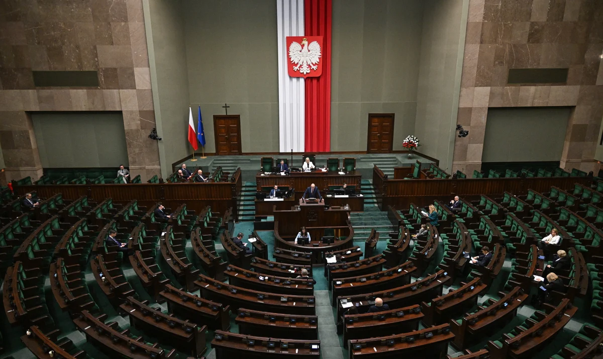

W sejmie znowu głośno o aborcji
W ostatnim tygodniu na sejmową mównicę powrócił temat aborcji. Lewica chce przyspieszyć prace nad ustawą liberalizującą prawo aborcyjne w Polsce, jednak marszałek Szymon Hołownia twierdzi, że ustawa i tak zostanie odrzucona w trakcie pierwszego czytania, więc nie ma sensu przyspieszać sejmowego głosowania nad nią. Marszałek powiedział, że może skrócić termin oczekiwania na głosowanie (pierwotnie ma ono odbyć się podczas obrad 11 kwietnia), ale pod warunkiem, że otrzyma zapewnienie od klubów tworzących aktualnie większość sejmową, że solidarnie nie odrzucą tej ustawy po pierwszym czytaniu.
Z słowami Szymona Hołowni nie zgadzają się przedstawicielki strajku kobiet, które zakłóciły piątkową konferencję prasową marszałka, oraz przedstawiciele Klubu Parlamentarnego Lewicy. Z sejmowej mównicy posłanka Anna Maria Żukowska przypomniała, że kobiety czekają już ponad 30 lat na liberalizację przepisów aborcyjnych i opóźnianie takich ustaw jest nieodpowiednie. Zadeklarowała, że klub Lewicy w pełni zagłosuje za poparciem nowych ustaw.